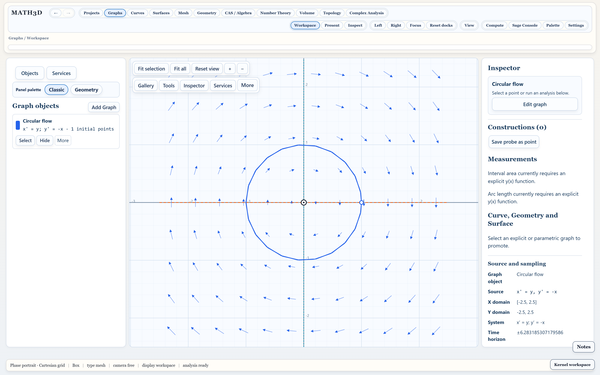
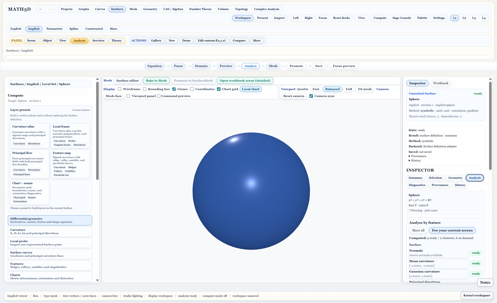

Graph gallery
editable scenes and guided concepts
Geometry without friction
Math3D combines interactive surfaces, procedural solids, and topology tools with CGAL/VTK-backed workflows. Use it for teaching, prototyping, and research visuals.

Implicit mode focuses on field-defined surfaces and mesh extraction for complex equation-driven geometry.
editable scenes and guided concepts
high-fidelity mesh and volume operations
tested workflows for release confidence
capabilities checked per platform and operation
Why Math3D
Explore implicit, explicit, and parametric surfaces with contouring, curvature tools, and diagnostics.
Create procedural solids and constructions, then inspect constraints and measurements in-context.
Construct polygon-word models and animate realizations for educational or exploratory topological studies.
Use Python worker integrations for heavier CGAL/VTK operations when precision and throughput matter.
Source-build gallery
Explore full-resolution images captured from the public browser app and desktop scientific viewers on 5 November 2026. These are not signed 2.0 installer captures.
Twenty-six current graph gallery scenes, including calculus, curves, implicit regions, and phase portraits.
Verified 3D fields, slices, source inspection, and analysis views captured in the desktop app.
Verified Theory Lab scenes with supplied bands, fields, and source-linked views in the desktop app.
2.0 in preparation
The bounded Surface path is the proposed 2.0 research showcase. Quantum scene and CAS routes remain conditional on verified external scenes or a compatible Sage service. These are source-build views, not signed 2.0 installer captures.
Start from a Catenoid Surface, derive a sampled Curve and Mesh, then compare local analytic and discrete curvature evidence in one Project. Saved results link to exact source generations and Workbook references; this is not a continuous ridge or convergence proof.
Current source: bounded guided evidence and restart checks exist. 2.0 gate: the exact installed candidate still needs qualification.

With an independently verified producer-created QWZ scene bundle, inspect a reciprocal-space point and retain its selected source with the Project. No producer scene is bundled with the Gallery card.
Current source: bounded Study views exist. 2.0 limit: this conditional route is not a completed bundled flagship journey.
With a verified compatible Sage operation, carry an exact polynomial or bounded ideal result into a qualified real sample and supported Geometry or Curve view. The sampled view retains its source and method qualifications.
Current source: typed operations and selected handoffs exist. 2.0 limit: general algebraic visualization and singularity resolution are not advertised.
Typical Workflow
Start in the browser for quick access, or install the desktop release for local workflows with bundled worker tooling. Check platform capabilities before relying on a particular editor or compute route.